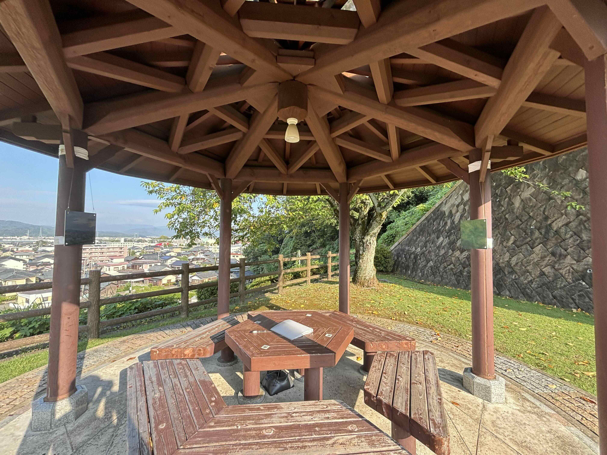
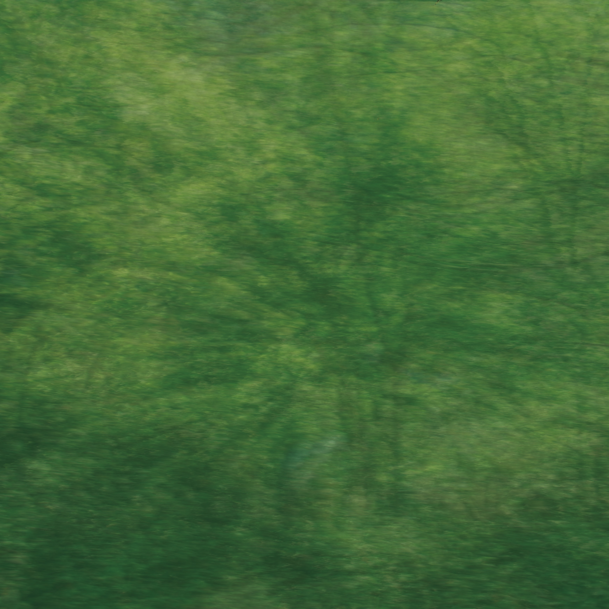

Resonance

本作は、「そこ」に存在する様々な「境界線の響き合い」を解釈・表現する、サイトスペシフィックなサウンド・インスタレーションである。
AR技術、WEBアプリによる参加型システム、物理パネル、フィールドレコーディング楽曲という複数のメディアを往来し、ある土地や音をめぐる「関係性」を可聴化する手法を提案した。それは、鑑賞者の「日常」を再構築する、コミュニケーションのインターフェースとして機能する。
現象・物質・情報というメディアを往来し、現れては消える不可逆性や物質性のなかで蠢くエモーションについて問いかける。

